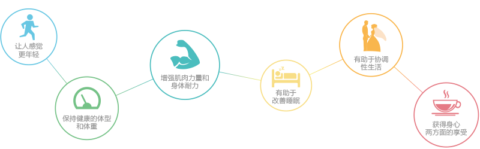

苏格拉底说：“身体的健康因静止不动而破坏，因运动练习而长期保持。”
而现代科学已经证明，规律运动能给我们带来以下益处
久坐少动，缺乏规律运动则会出现机体功能降低，从而增加肥胖，心脑血管疾病、骨质疏松、糖尿病、结肠癌等疾病的患病风险，对于女性还会增加乳腺癌的风险；此外，缺乏运动也会提升患焦虑和抑郁等精神疾病的概率。
总体体质评估：健康
理想体重
当前体重
还差8.5kg您就可以达到完美体重了
肥胖
属于微胖体型，平时多多运动吧
下身肥胖
腿部脂肪较多
职业/生活方式：白领，轻体力劳动，运动频率低
属于亚健康生活方式，建议您规律饮食，保证8小时的睡眠时间，休闲时多做运动，提高新陈代谢，可以获得更加良好的精神状态。
根据检测结果分析，您在某疾病、某疾病、某疾病等方面存在潜在的风险。
我们根据上述数据，结合您目前的运动情况，编制以下一周运动计划。
我们根据上述数据，结合您目前的运动情况，编制以下一周运动计划
不要在饭后立即进行剧烈运动，剧烈运动时机体血液重新分配，皮肤和肌肉血流量增多，胃肠道和消化腺体血流量减少，消化吸收能力减弱。如果胃内食物过多，运动时可引起胃震荡，进而引发恶心、呕吐、腹痛。运动结束后一定时间内，胃肠道血液才会逐步增多恢复正常。因此，运动后至少休息30分钟再进食，大强度运动后应休息40-60分钟再进食。
男性肌肉收缩力量大，速度快，参加体育活动时竞争意识强，常常由于运动过于剧烈导致各种运动损伤。女性肌肉力量较弱，运动时对关节的保护作用较差，在参加相同强度的体育活动时，发生关节损伤的几率高于男性。另外，女性的雌激素呈周期性分泌，雌性激素分泌降低与骨质疏松、疲劳性骨折发生较多有关。
体重过重或肥胖者，体内脂肪含量较高，运动时会额外增加肌体的运动负担。肥胖人群不妨选择游泳、自行车等器械进行热身，以让关节受到的冲击力下降。
体育场地不平坦，光线不好，运动器械质量不高，或安装不牢固、环境温度过高或过低、运动服装和运动鞋不合适等都属于运动伤害外在风险因素。
循序渐进的增加运动强度，同时监控运动强度。监测自己的心率，持在目标心率范围内，如果经济条件允许，可使用电子心率计。避免下列情况出现：做静力练习的同时憋气、负荷过重、心律失常。
运动中补水：运动量小，出含量少，补充白开水、矿泉水或其他饮料均可：运动量大，出汗多，应补充含盐的运动饮料，菜汤等
训练后别急于洗澡，稍微休息一下，等不再出汗的时候再温水洗澡。
通常在运动完后要补充一小餐。主要补充少量的蛋白质、高升糖指数的碳水化合物、矿物质等。
延迟性肌肉酸痛是指运动结束12-48小时后感觉到的肌肉又酸又疼的症状。
【现象分析】
通常发生在刚开始一项新运动、运动项目改变或锻炼持续时间或强度有显著提高时。这种酸疼是对非常规运动量的一个正常反应，是肌肉修复和构建更大耐力和强度的一种自适应过程。酸疼在运动后两天到达顶点，之后的若干天逐步消减。
【对应措施】
运动前做全面热身，运动后做整理拉伸，可以有效消除肌肉酸痛。
温和按摩患处。研究发现按摩能大概减缓30%的肌肉酸痛并减少肿胀。
【现象分析】
引起膝关节疼痛的原因有很多，关节不稳、僵硬或下肢力线不正。所谓运动磨损膝盖其实并不科学，膝盖周围肌肉无力是运动中关节缺乏稳定的根本原因，肌力和协调性跟不上的话，跑步便会对膝关节的半月板、软骨形成震荡损伤。
【预防措施】
水泥地的表面最坚硬不可忽视其反作用力，最好不要在人行道上慢跑。
定期更换跑鞋.当跑鞋失去弹性而无法再承受反作用力后，应立即换鞋。
议在跑步前先进行加强大腿肌肉的力量练习。
【对应措施】
开始快走初期，有可能经历脚疼、腿疼、膝盖不适等各种反应，可以放慢速度，如果还感觉疼痛不适，就休息一下，暂时不要运动，休息到疼痛减弱或者消失为止。
运动时若发生膝盖疼痛，可以立即用冰块冰敷，并抬高患部20至30分钟。冰块是极佳的消炎剂，最好在当天晚上或隔天早晨起床时，再以冰块敷一次。
【其他】
针对现在流行的运动护具，护膝什么的最好不戴。只有受伤的人需要戴，我们普通人能不戴就不戴。道理很简单，必须让你的膝盖去适应外界这个冲击，膝盖才能有劲。
官方网站：www.gene01.com
微信公众号：genetangram
客服电话：40012345678（9：00-21：00）

合作伙伴：


copyright@今堂健康管理科技有限公司